回転入れ ミノの回転入れ
T-Spin
T-Spinは回転入れの中でも重要度の高いテクニックです．
T-Spinの成立条件はミノの回転軸の斜め4ブロックのうち，3ブロックが埋まっている部分に回転入れを行うことです．
T-Spin Mini
T-Spin Miniは壁や床を利用して1ライン消すT-Spinです．正確には風車回転できないT-Spinを指します．Mini自体の扱いはソフトごとに扱いが異なるので注意ですが．BackToBackをつける点でテトリスにつなげるなどの使い方は有効でしょう．
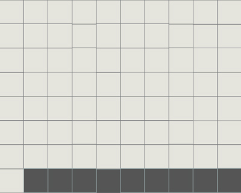 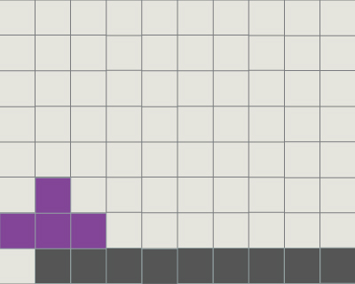 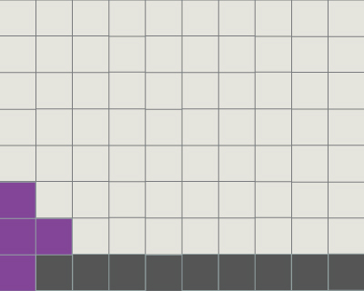
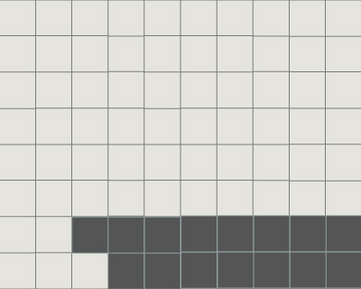 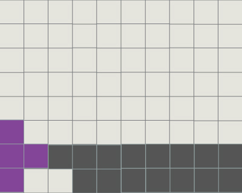

ミノで同様の状況を作っても可能です．壁の高さは3以上である必要があります．
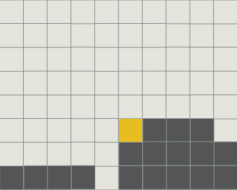 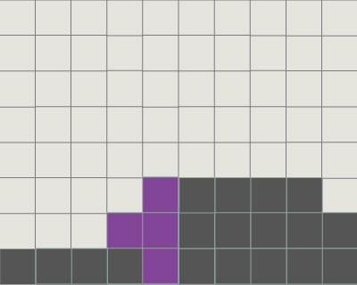
T-Spin Single
T-Spin SingleはT-Spinを利用して1ライン消すことです．多くはT-Spin Doubleの妥協消しです．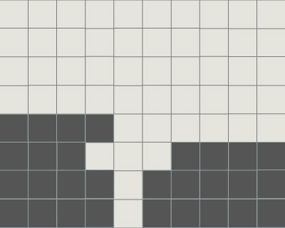 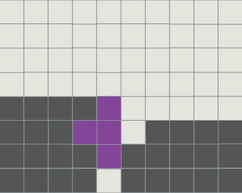 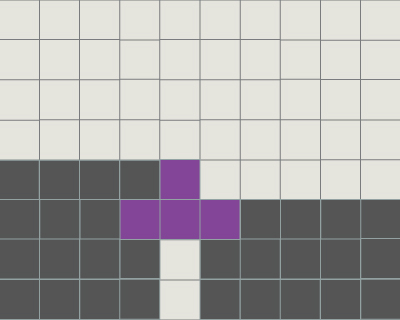
Tミノの向きは他の地形によって流動的に変化します．
特に，下穴の位置によってはT-Spin Singleは役割を持つでしょう．
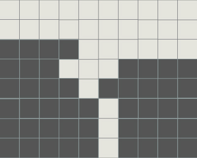 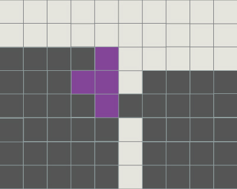 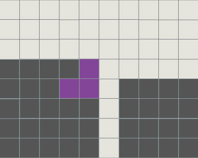 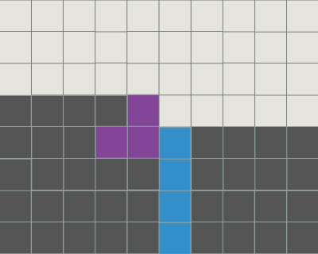
T-Spin Double
T-Spin DoubleはT-Spinの中で最も重要といっても過言ではありません．常に地形を意識しておきましょう．
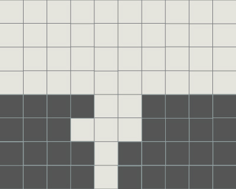 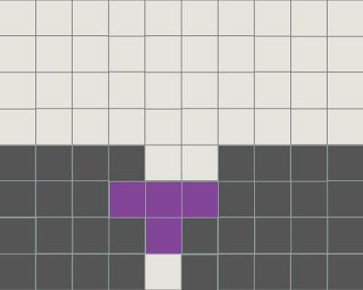
壁が２マスある場合はどちらからでも回転入れが可能です．
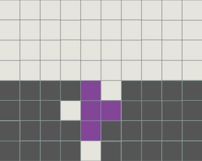 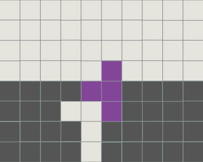
壁が１マスの場合は入れる向きが制限されます．
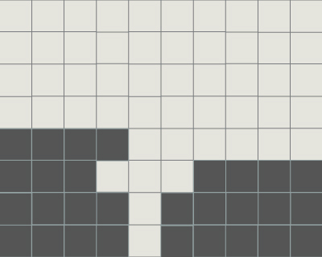 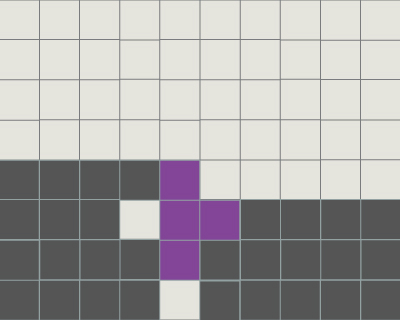 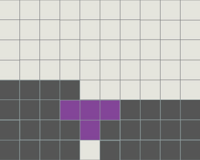
T-Spin NEO,FIN,ISO
特異的なT-Spinです．屋根や壁の長さ，高さも重要で使う場面は限られます．使うときには自由落下の影響を避けるため，一度目的の場所へミノを入れてしまってから逆回転をするとよいでしょう．
NEO
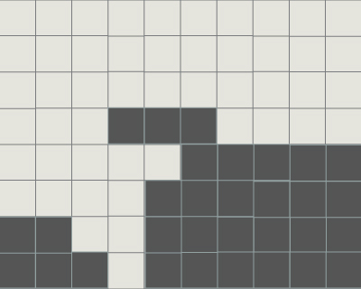
 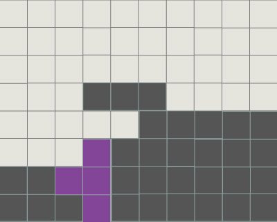
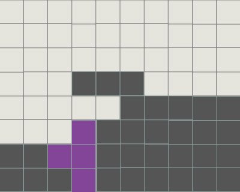FIN
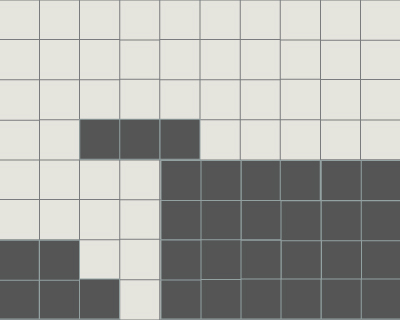 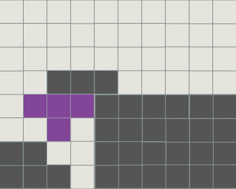 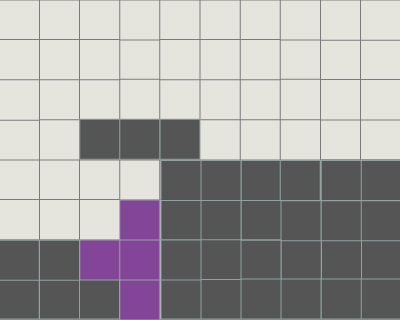
ISO
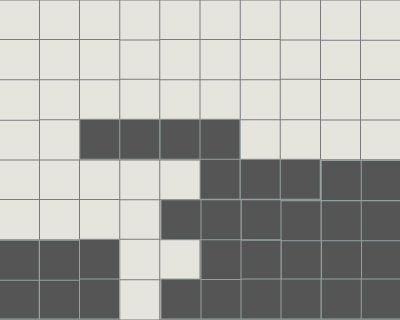 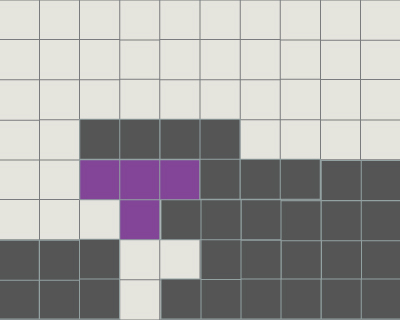 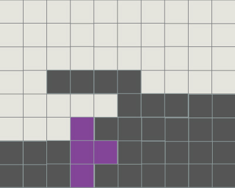
T-Spin Triple
T-Spin Tripleは複雑な地形ですが，ボーナスが高いです．ただし残る地形も良くはないので使いどきの見極めが重要でしょう．
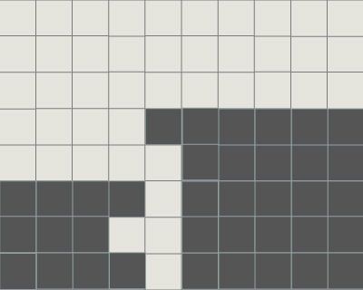 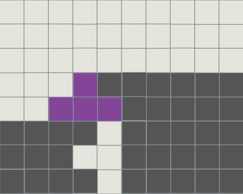 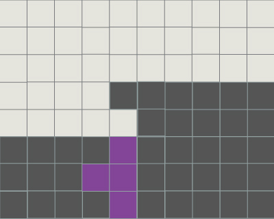
壁があっても同様にできますが，高さが2以上ないと回転できないので注意が必要です．
 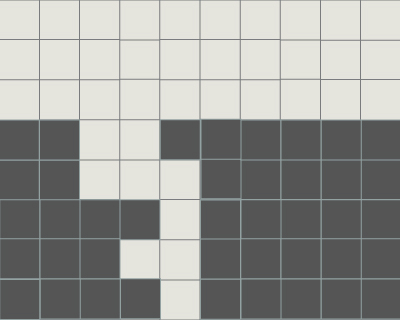
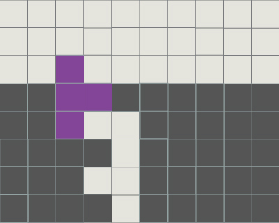
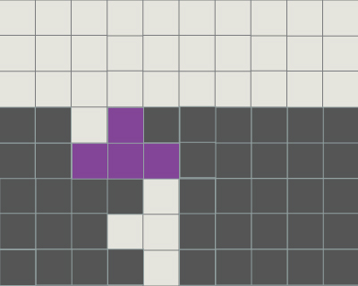
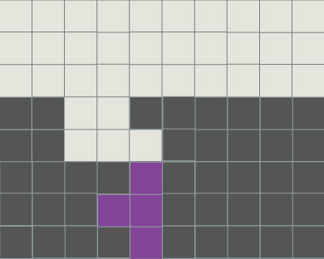
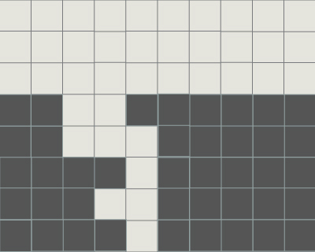
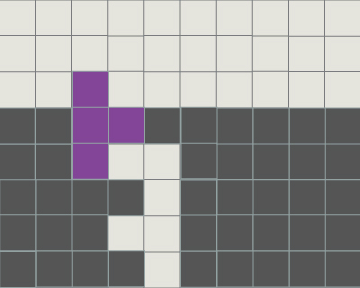
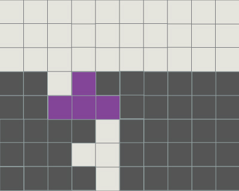
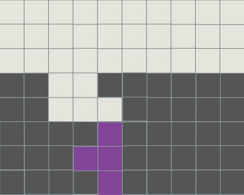
SZ-Spin
SZミノは0度と180度の状態が見た目ではわかりづらいので，回転入れの操作も注意が必要です．
回転方向を示している場合は，0度（ミノが出現した初期状態）での回転方向での表記です．
SとZは左右対称なのでここではS-Spinのみについて表しています．
S-Spin Double
壁がない場合です．地形に引っ掛けるようにして回転入れを行います．右回転で立て，右回転で入れます．
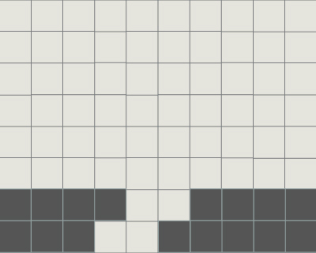 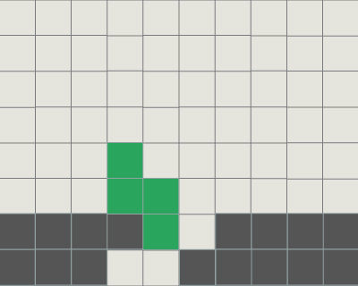 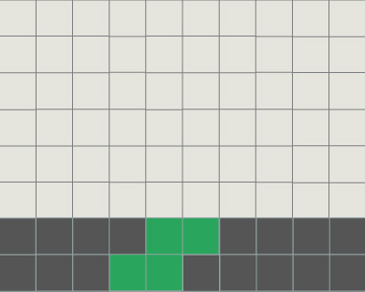
壁がある場合でもできますが，高さが足りないとうまくできません．
操作方法が壁がない場合と異なり，左回転で立て，左回転で入れます．
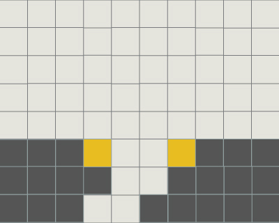 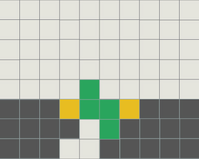 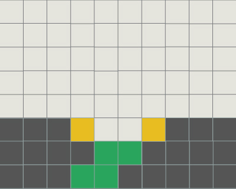
S-Spin Triple
独特の入り方をするのでわかりづらいですが，覚えておくとリカバリに役に立つでしょう．そのままおろし，左回転です．
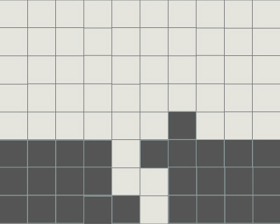 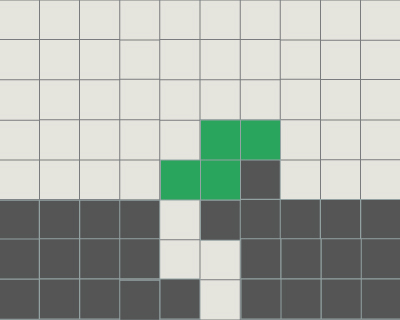 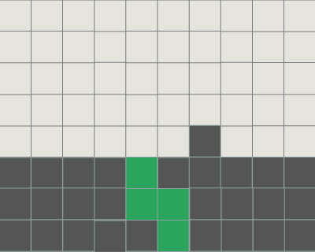
また，T-Spin Tripleのように屋根を付ける方法もあります．
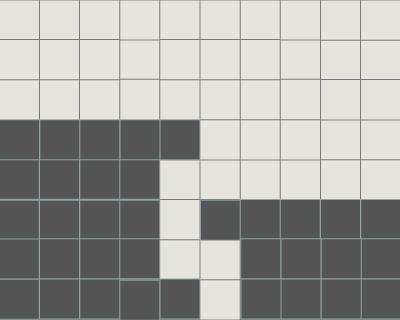 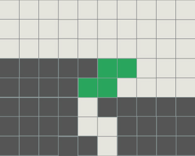 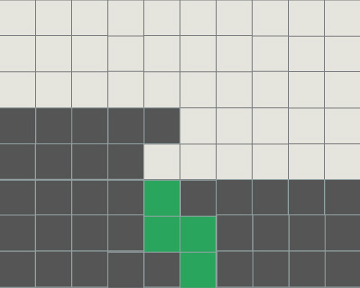
この際に，屋根が上に1マス，左に1マスずれても同様に行えます．
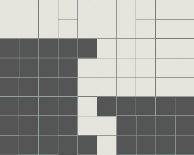 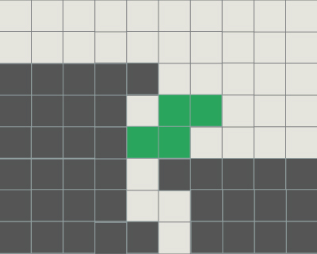
LJ-Spin
LJスピンは見た目にもわかりやすく，リカバリにも使いやすいです．
LとJは左右対称なのでここではL-Spinのみについて表しています．
L-Spin Double
風車回転可能なタイプのL-Spinです．
振り下ろすタイプのL-Spinです．赤いマスのうち，少なくともどちらかは埋まっている必要があります．
スライドタイプのL-Spinです．緑マスのうち，どちらか一方のみが埋まっている必要があります．
ただし，ミノをずらし入れで地形を解消できる場合もあります．
L-Spin Triple
Tripleも他のミノと同様に考えることができます．LJミノは他のミノに比べ，屋根の許容範囲が広いです．
上に1マス，左に1マス，左上に1マスずれても同様に入ります．
I-Spin
Iミノは回転法則が特殊で，左右で別々の操作を要求されます．
左側へ回転入れする際は0度のままおろし，右回転で入ります．
ただし，黄色いマスのどちらか一方が空いていると回転できません．
屋根に関しては上に1マスずれても構いません．その際の成立条件は同じです．
また，上に2マスずれても構いません． その際はIミノの向きや回転方向が自由になります．

右側へ回転入れする際は条件が異なります． 180度の状態でおろし，左回転で入ります．
ただし，黄色いマスが空いていると回転できません．
屋根に関しては上に1マスずれても2マスずれても構いません．その際はIミノの向きや回転方向が自由になります．
振り下ろすタイプのIスピンです．
右側におろしたい場合は，右回転で立て，右回転で入れます．
ただし，黄色いマスのどちらか一方が空いていると回転できません．
これは左側に関しても同じです．ただしその際の回転方向は左回転で立て，左回転で入れます．